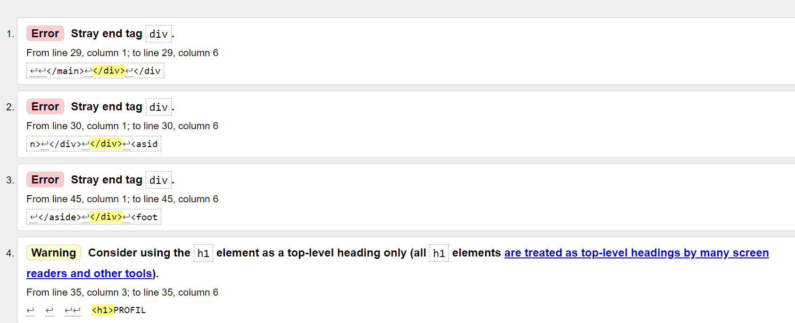
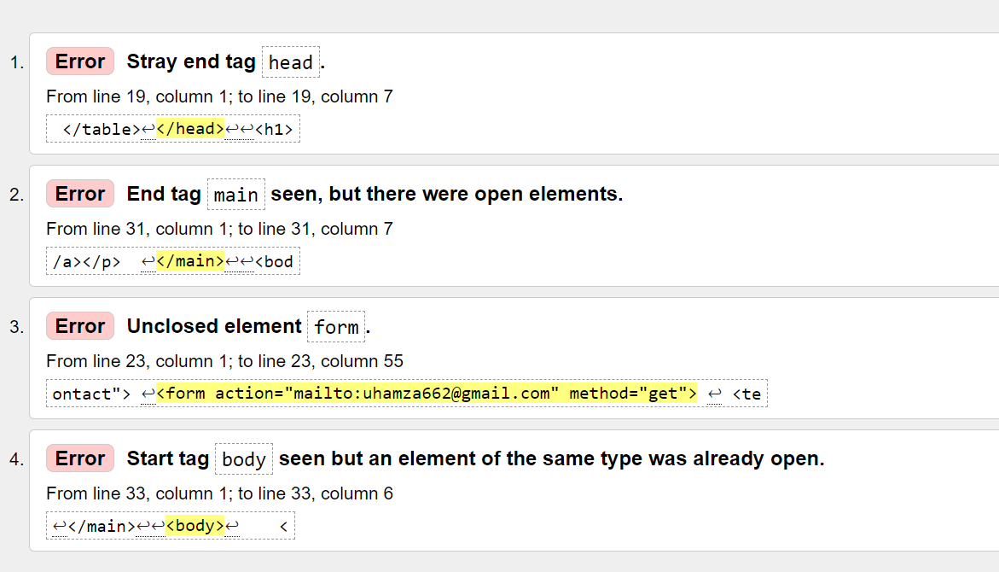
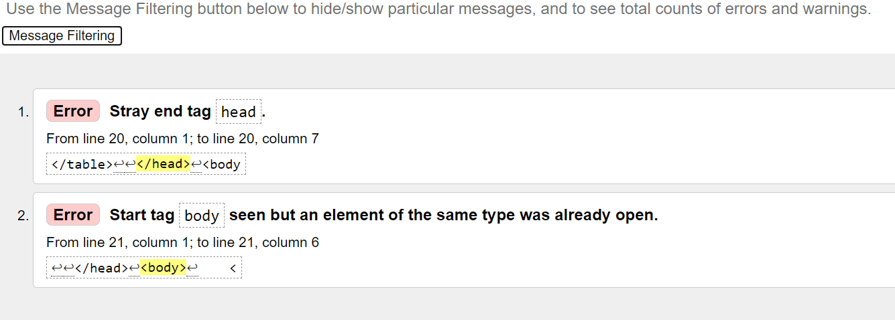
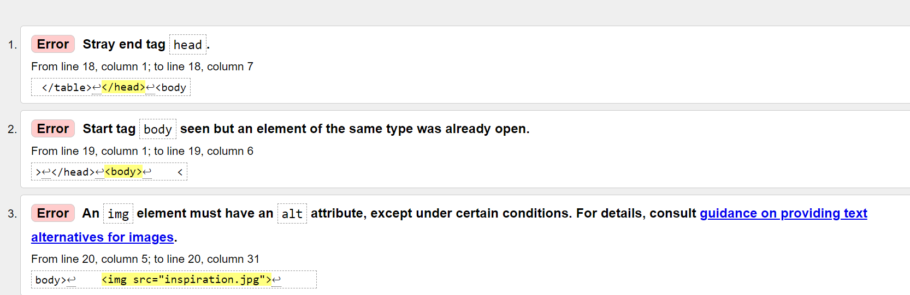
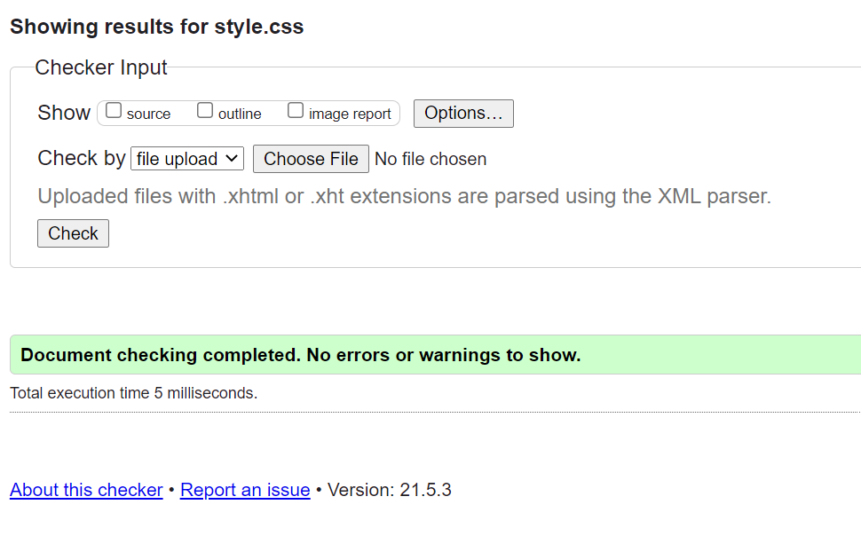
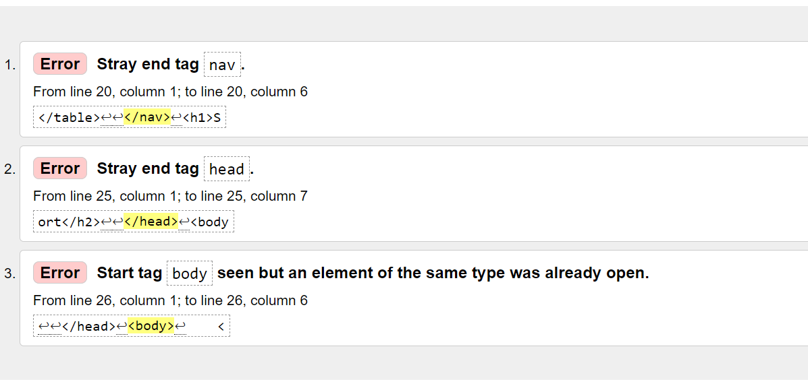

| HOME | PORTFOLIO | CONTACT | CV | SITE REPORT |
my experience of learning the basic of web development. first, they are somethings that I found them harder because a started going to class 4th week of lectures so i have to go through my model to catch up with the rest of course mate. i have been finding it harder because as i was studding class is still on. I got my web site experience by searching codepen online seeing other peoples work. i found making putting images as background hard because of how you have to rezise the images but with help of w3schools i was able to get it done and to seprate my picture from the navigation bar was hard so i used header and space.
cv validation
contact validation
portfolio validation
index validation
style validation
site report validation
